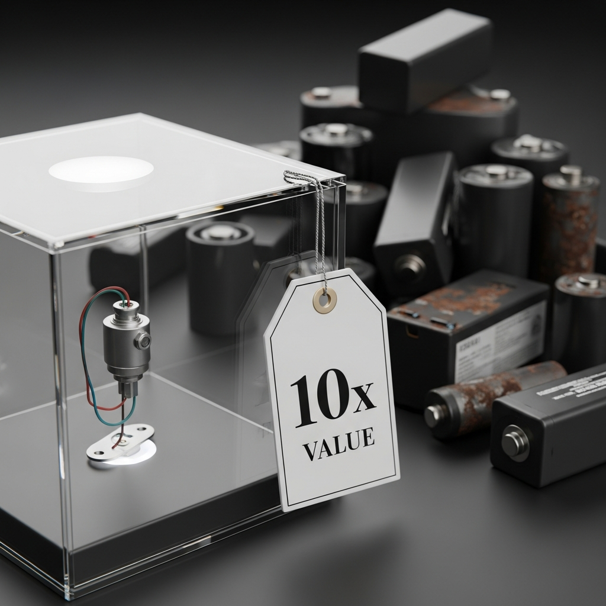

赋能用户 · 深度开源
为什么自动化监测推行缓慢？
成本运维 与 数据安全 是两大核心阻碍。
money_off 成本与运维困境
监测单位向设备厂商采购，溢价高达 5-10 倍。 大多厂商仅做传感器集成，无核心技术且不支持低功耗，导致电池更换频繁，运维成本激增。

security 数据管理与安全隐患
数据存储于厂商服务器，面临泄露风险。即使本地部署，也无法判断是否存在 多路上传 或 预留后门，数据主权难以保障。

开源赋能 · 自主可控 成本优化
从硬件设计到固件源码，从云端平台到 AI 引擎，我们交付完整的技术栈与生产能力。
让您真正掌握核心技术，实现降本增效与数据主权
让您真正掌握核心技术，实现降本增效与数据主权
全流程生产指导
01
硬件准备
发送 Gerber 文件至代工厂制板/贴片，按 BOM 采购元器件。
02
组装烧录
采购外壳与耗材，组装设备并烧录固件，完成整机测试。
03
服务部署
选购云服务器或准备本地主机，一键 Docker 部署完整服务环境。
04
上线运行
现场安装调试接入。2 人 / 1 周 即可完成大多工程项目交付。